Portal del profesor
¡Hola! Aquí está todo para tu clase.
Para tu clase
También hoy
Todos mis grupos
Manuales
Los de tus clases
Core Basics
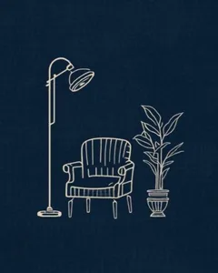
Pre-A1Core Basics · Nivel 1
To Be or Not To Be. Identidad, presentaciones y lo esencial.
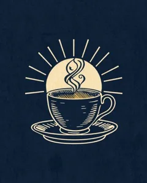
A1Core Basics · Nivel 2
Do I Know? Rutinas, preguntas y presente simple.
Core Basics · Nivel 3
Have I Been? Pasado, experiencias e historias.
Core Basics · Nivel 4
Use It! Sin gramática nueva: usa lo que ya sabes y habla mucho.
Core Practice
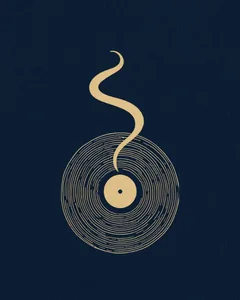
B1Practice · Nivel 1
Listening y speaking con audio en cada lección.
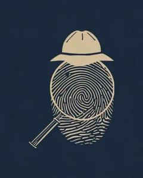
B1+Practice · Nivel 2
Lectura y escritura: leyendas, mitos y misterios.
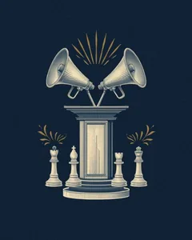
B2Practice · Nivel 3
Las 4 destrezas: debate y descubrimiento.
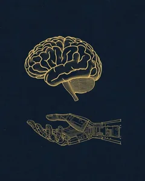
C1Practice · Nivel 5
Futuro y tecnología: lectura y escritura.
Practice · Nivel 6
Cultura pop y sociedad: dominio de las 4 destrezas.
Core Grammar
Grammar Foundations
Drills fundamentales para consolidar la base.
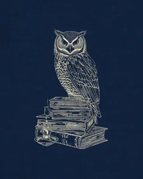
C1+Grammar Mastery
Estilo, matices y excepciones del inglés avanzado.
Cursos especializados
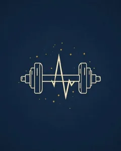
IntensivoConversation 1 · Curso Intensivo (CCI 1)
Bootcamp de conversación (A2–B1): 20 sesiones, cada una con un video real de YouTube, seis frases, preguntas en tres niveles y un juego.
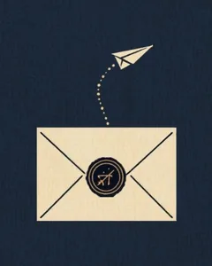
B1Business Path I · Office Foundations
Inglés de oficina de supervivencia: llamadas, correos, juntas y clientes — 20 lecciones con audio.
Business English Premium
Comunicación corporativa efectiva — 10 lecciones detalladas con audio en cada lección.
Business Path III · Strategic Influence
Persuasión, negociación, liderazgo, crisis y el sales pitch capstone — 20 lecciones.
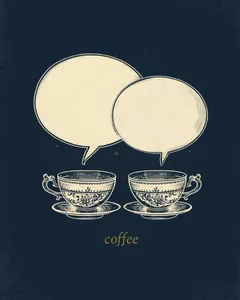
A0–A1Daily Life English · Vol. 0
Club de conversación: 20 sesiones de frases nativas para el día a día, con role-plays y reto semanal.
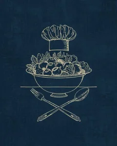
A2Daily Life English · Vol. 1
Inglés social (A2): saludos, planes, restaurantes, viajes, hotel, compras, farmacia y banco — 16 módulos.
Daily Life English · Vol. 2
Vida adulta (B1): renta y servicios, vecinos, empleo y entrevistas, impuestos, banco, seguros y salud — 16 módulos.
Aviation English · Cabin Crew
Inglés operativo de tripulación: seguridad y emergencias, atención médica a bordo y servicio al pasajero.
Political & Global Affairs
Diplomacia, política y discurso civil: instituciones, campañas, tratados y geopolítica — 21 lecciones con examen del nivel.
Preparación de exámenes
Certification Path I · Gateway
Primera certificación: B1 Preliminary, IELTS 4.5–5.5 y TOEFL. 20 lecciones con drills cronometrados.
Certification Path II · Ascent
B2 First e IELTS 5.5–6.5: paráfrasis, distractores y escritura estructurada. 20 lecciones.
Certification Path III · Summit
CAE, CPE e IELTS 7.0+: matiz, registro y resistencia. 20 lecciones.
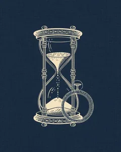
B2–C2Certification Prep · Intensivo
Estrategia de examen: drills cronometrados, modelos Band 6/8 y simulacro final.
Los manuales son privados. Si uno no abre, pide a la academia que autorice tu correo.